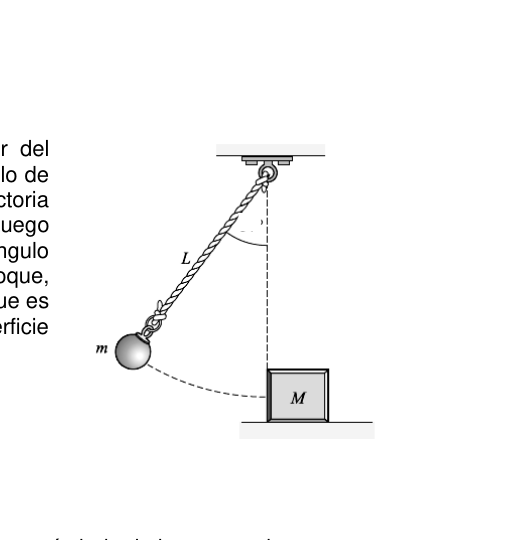

Problema 3 Un péndulo de masa m, es liberado a partir del reposo desde una posición que forma un ángulo de y en el punto más bajo de su trayectoria impacta contra un bloque de masa . Luego del choque el péndulo rebota y alcanza un ángulo máximo de . El bloque , después del choque, se desplaza una distancia horizontal hasta que es frenado debido al rozamiento con la superficie horizontal .
Datos:
- A. Calcule la velocidad del péndulo en el punto más bajo de la trayectoria
- B. Calcule las velocidades del péndulo y del bloque inmediatamente después del choque. c) Determine la distancia D que recorre la masa M hasta detenerse. d) Determine si el choque entre m y M fue plástico, elástico o explosivo.
Considere Problema Teórico 1 Hoja de Respuesta Inciso
Puntaje a)
b)
c)
d) Problema Teórico 2 Hoja de Respuesta Inciso
Puntaje a)
b)
c)
d)
e) Problema Teórico 3 Hoja de Respuesta Inciso
Puntaje a)
b)
c)
d) Olimpíada Argentina de Física
Pruebas Preparatorias Primera Prueba: Mecánica Parte Experimental
Nombre: …
DNI: …
Escuela: …
- Antes de comenzar a resolver la prueba lea cuidadosamente TODO el enunciado de la misma.
- Escriba su nombre y su número de DNI en el sitio indicado. No escriba su nombre en ningún otro sitio de la prueba.
- No escriba respuestas en las hojas del enunciado pues no serán consideradas.
- Escriba en un solo lado de las hojas. Estudio de rotaciones y pequeñas oscilaciones de un casi un trompo!!! Se propone estudiar experimentalmente la rotación de un cuerpo que está apoyado sobre una superficie plana, como se indica en la Figura 1. El cuerpo (de ahora en más: trompo) consiste de un disco muy fino de radio a con un eje de largo L ortogonal al mismo y que pasa por el centro del disco. Considere que la masa del eje es despreciable frente a la del disco.
Si al trompo se le entrega un impulso suficientemente grande, paralelo al plano horizontal, ortogonal a su eje y aplicado sobre el disco, el trompo comenzará a rotar en torno a su eje con velocidad angular y al eje z con (manteniendo aproximadamente la punta del eje sobre un mismo punto de la superficie horizontal).
Parte A Construya un trompo similar al descripto. Para esto puede utilizar como disco un CD, una tapa de frasco de café, etc. Como eje puede usar un lápiz, una lapicera, un palito de “brochet”, una aguja de tejer, etc. ¡¡¡Vele por obtener un trompo con simetría acimutal!!!
a) Implemente un método para determinar las velocidades y que adquiere el trompo cuando se le entrega un determinado impulso. Considere la situación en la que las fuerzas de roce no realizan trabajo (rueda sin deslizar). b) Realice mediciones de y cuando se entrega al trompo diferentes impulsos (al menos realice 10 determinaciones de y ). c) Grafique versus y ajuste los valores mediante una recta. Determine la pendiente de la recta. d) Compare el valor hallado con el obtenido mediante un análisis cinemático.
Parte B Si al trompo se le adhiere una masa puntual m (masa concentrada, de dimensiones mucho menores que las del disco), de forma tal que se “rompe” la simetría acimutal, por la que Usted “veló” el trompo, apoyado, adquirirá una posición de equilibrio en la que la masa extra estará más próxima a la superficie horizontal (Figura 2). Si en esta situación se le entrega al trompo un impulso de características similares al que se usó en el estudio de rotaciones, pero esta vez de menor magnitud (un impulso pequeño), el trompo comenzará a y la amplitud de las oscilaciones será “pequeña”. Utilice una tuerca, un “plomito”, un poco de plastilina, etc., como masa concentrada y adhiérala a la cara del disco, tan próxima al borde del mismo como sea posible, sin que interfiera en el contacto con la superficie horizontal.
e) Determine el período de oscilación T del trompo para diferentes longitudes L del eje del mismo. Para esto bastará con desplazar el disco sobre el eje de masa despreciable. Realice esto al menos para cuatro longitudes. f) Determine el coseno del ángulo para cada una de las condiciones en las que determinó el período. g) Confeccione un gráfico vs . Ajuste una recta y determine la pendiente de la misma. h) A partir de la pendiente determine la relación entre la masa M del trompo y la masa m que le adhirió. Problema Experimental Hoja de respuestas. Inciso
Puntaje a)
b)
c)
d)
e)
f)
g)
h) Problema Teórico 1 Hoja de Respuesta Inciso
Puntaje a)
4 ptos. b)
2 ptos. c)
2 ptos. d)
2 ptos. Primer Prueba Preparatoria: Mecánica
Resolución Problema teórico 1.
a) La aceleración tiene una componente horizontal igual a la que produce el viento y la componente horizontal es la de la gravedad. Respecto al sistema de coordenadas mostrado la podemos escribir:
2 2 s m ax
2 10 s m a y
Entonces vemos que el movimiento, en cada una de las componentes, se corresponde al de un movimiento con aceleración constante (MRUV).
Las componentes de la velocidad inicial (t = 0 s) son:
s m s vx 0 ) 0 (
s m s v y 20 ) 0 (
Por lo tanto las componentes de la velocidad de la pelota en función del tiempo serán:
t s m t vx 2 2 ) (
s m t s m t v y 20 10 ) ( 2
La posición de la pelota para t = 0 s es:
m s x 0 ) 0 (
m s y 50 ) 0 (
Entonces la posición de la pelota, en función del tiempo, es:
2 2 1 ) ( t s m t x
m t s m t s m t y 50 20 5 ) ( 2 2
b) En el instante que la pelota alcanza su máxima altura (tm) la componente vertical de la velocidad se anula. s m s m t s m t v m m y 0 20 10 ) ( 2
Despejando obtenemos s tm 2
Por lo tanto la altura máxima que alcanza la pelota es
m m t s m t s m t y m m m 70 50 20 5 ) ( 2 2
La velocidad de la pelota cuando alcanza la máxima altura sólo tiene componente horizontal s m t s m t v m m x 4 2 ) ( 2
c) En el instante en que la pelota llega al piso (tf), para nuestro sistema de coordenadas, la coordenada vertical se anula.
m m t s m t s m t y f f f 0 50 20 5 ) ( 2 2
Las soluciones de esta ecuación son:
m t f 742 ,1 1
m t f 742 ,5 2
La solución positiva es la que tiene sentido físico; entonces la distancia horizontal desde el punto de lanzamiento hasta que toca el piso es:
m t s m t x d f f 967 , 32 1 ) ( 2 2 2 2
d) Las componentes de la velocidad de la pelota en el instante del impacto son:
m t s m t v f f x 483 , 11 2 ) ( 2 2 2
m s m t s m t v f f y 417 , 37 20 10 ) ( 2 2 2
Por lo tanto el módulo de la velocidad en el instante del impacto es
m t v t v t v f y f x f 139 , 39 ) ( ) ( ) ( 2 2 2 2 2 Problema Teórico 2 Hoja de Respuesta Inciso
Puntaje a)
1 pto. b)
3 ptos.
(1 pto. si solo ponen la normal) c)
2 ptos. d)
2 ptos. e)
2 ptos. Pruebas Preparatorias - Solución Correcta del Problema Teórico 2
Primer Prueba Preparatoria: Mecánica
Resolución Problema teórico 2.
a)
: Fuerza normal. P : Fuerza peso. Fr : Fuerza de rozamiento.
b) El piso del montacargas le ejerce, de las fuerzas graficadas arriba, la fuerza normal (en la dirección vertical) y la fuerza de rozamiento (en la dirección horizontal).
Calculemos la fuerza normal que ejerce el piso. Sabemos que en la dirección vertical
a m P N
0
4 0 g m mg N

pendolo colpisce blocco su superficieTopic: Conservation of Momentum, Conservation of Energy, Newtonian Mechanics Metodi: Conservation of Momentum, Conservation of Energy, Free-Body Diagram Competenze: Physical Reasoning, Mathematical Modeling Objects: Pendulum, Block Fonte: Testo (PDF) — p.4
Figure
Figure
Figure
Figure
Figure
Figure
Figure
Figure
Figure
Figure
Figure
Figure
Figure
Figure
p.9 — disco CD su asse inclinato (Figura 1)
p.10 — trompo inclinato con asse e massa m (Figura 2)
p.23 — disco CD su asse inclinato soluzione (Figura 1)
p.24 — grafico omega2 vs omega1 con retta di fit
p.25 — trompo con massa aderente (Figura 2)
Problema 3 Un pendolo di massa m, viene rilasciato a partire dal riposo da una posizione che forma un angolo di e al punto più basso della sua traccia impatto su un blocco di massa . Poi dal colpo il pendolo rimbalza e raggiunge un angolo massimo . Il blocco , dopo l’impatto, si spostano una distanza orizzontale fino a che non si frenata a causa del ruggine con la superficie horizontal .
Dati:
- A. Calcola la velocità del pendolo al punto più basso della traccia
- B. Calcola le velocità del pendolo e del blocco immediatamente dopo il
- Coppia. c) Determina la distanza D che percorre la massa M fino alla sua sosta. d) Determina se l’impatto tra m e M è stato plastico, elastico o esplosivo.
Considera Problema teorico 1 Pagina di risposta Inciso
Punteggio a)
b)
c)
d) Problema teorico 2 Pagina di risposta Inciso
Punteggio a)
b)
c)
d)
e) Problema teorico 3 Pagina di risposta Inciso
Punteggio a)
b)
c)
d) Olimpiada Argentina di Fisica
Prove di preparazione Primo test: meccanica Parte sperimentale
Nome: … (di cui sopra)
DNI: … è stato fatto il primo giorno di una riunione di lavoro.
Scuola: …
- Prima di iniziare a risolvere il test, leggi attentamente TUTTO la sua frase.
- Scrivi il tuo nome e il tuo numero di identificazione in quel posto indicato. No non scriva il suo nome in nessun altro posto della prova.
- Non scrivere risposte sui fogli della frase, perché non saranno considerate.
- Scrivi su un solo lato delle foglie. Studi di rotazioni e piccole oscillazioni di un quasi un tubo!!! Si propone di studiare sperimentalmente la rotazione di un corpo che si appoggia su una superficie piana, come indicato in figura 1. Il corpo (da ora in più: tubo) consiste in un disco molto sottile a radio con un asse L lungo ortogonalmente lo stesso e che passa attraverso il centro del disco. Considera che la massa L’asse è scortese rispetto a quella del disco.
Se il tubo riceve un impulso sufficientemente grande, parallelo al piano orizzontale, ortogonale al suo asse e applicato sul disco, il tubo inizierà a ruotare attorno al suo asse con velocità angolare e a z-axe con (mantendone circa la punta dell’asse) sullo stesso punto della superficie orizzontale).
Parte A Costruisci un tubo simile a quello descritto. Per questo, può usare come disco un CD, un copertura di un flacone di caffè, ecc. Come asse può usare una penna, una lapislatura, un bastone di brochet, un ago da tessitura, ecc. Cerchi di ottenere un tubo con simmetria acimutare!!!
a) Implementare un metodo per determinare le velocità che acquisisce il Trompano quando viene dato un certo impulso. Considerate la situazione in che le forze di rottura non svolgono il lavoro (ruota senza scivolare). b) Misurazioni di e quando vengono forniti al tubo diversi impulsi (in meno 10 determinazioni di y). c) Grafica contro e regola i valori con una retta. Determina la inclinato sulla retta. d) Confronta il valore riscontrato con quello ottenuto mediante analisi cinematografica.
Parte B Se al tubo si attacca una massa puntuale m (massa concentrata, di dimensioni La dimensione della superficie del disco è molto inferiore a quella del disco, in modo che la simmetria acimutare sia romputa, que Usted “veló” el trompo, apoyado, adquirirá una posición de equilibrio en la que la massa extra sarà più vicina alla superficie orizzontale (Figura 2). Se in questa situazione il tubo riceve un impulso di caratteristiche simili a quelle usate nello studio La struttura di rotazione, ma questa volta di minor portata (un piccolo impulso), è la tromba comenzará a y la amplitud de las oscilaciones será “pequeña”. Utilizzare una noce, un plomito, un po’ di plastilina, ecc., come massa concentrata e Appiccica la faccia del disco, il più vicino possibile al bordo del disco, senza che interferisce con il contatto con la superficie orizzontale.
e) Determina il periodo di oscillazione T del tubo per diverse lunghezze L dell’asse di quello stesso. Per questo basta spostare il disco sull’asse di massa
- Desprezioso. Fate questo per almeno quattro lunghezze. f) Determina il coseno dell’angolo per ciascuna delle condizioni in cui ha determinato il periodo. g) Configgere un grafico vs . Aggiusta un tratto e determina la pendenza della
- Sì, è lei stessa. h) A partire dalla pendenza, determinare il rapporto tra massa M del tubo e massa
- E’ stato lui a prenderlo. Problema sperimentale Pagina di risposte. Inciso
Punteggio a)
b)
c)
d)
e)
f)
g)
h) Problema teorico 1 Pagina di risposta Inciso
Punteggio a)
Quattro punti. b)
Due punti. c)
Due punti. d)
Due punti. Primo test preparatorio: meccanica
Risoluzione Problema teorico 1.
a) L’accelerazione ha una componente orizzontale uguale a quella che produce il vento e la La componente orizzontale è quella della gravità. Per quanto riguarda il sistema di coordinate e mostrata possiamo scriverla:
2 2 s m ax
2 10 s m a y
Quindi vediamo che il movimento in ciascun componente corrisponde al di movimento a costante accelerazione (MRUV).
I componenti della velocità iniziale (t = 0 s) sono:
s m s vx 0 ) 0 (
s m s v y 20 ) 0 (
I componenti della velocità del pallone in funzione del tempo saranno quindi:
t s m t vx 2 2 ) (
s m t s m t v y 20 10 ) ( 2
La posizione della palla per t = 0 s è:
m s x 0 ) 0 (
m s y 50 ) 0 (
Quindi la posizione della palla, in funzione del tempo, è:
2 2 1 ) ( t s m t x
m t s m t s m t y 50 20 5 ) ( 2 2
b) L’istante in cui la palla raggiunge la sua altezza massima (tm) la componente verticale della palla La velocità si annulla. s m s m t s m t v m m y 0 20 10 ) ( 2
La chiusura ci porta s tm 2
Quindi l’altezza massima raggiunta dalla palla è
m m t s m t s m t y m m m 70 50 20 5 ) ( 2 2
La velocità della palla quando raggiunge la massima altezza ha solo un componente orizzontale s m t s m t v m m x 4 2 ) ( 2
c) Il momento in cui la palla arriva al pavimento (tf), per il nostro sistema di coordinate, la la coordinata verticale viene annullata.
m m t s m t s m t y f f f 0 50 20 5 ) ( 2 2
Le soluzioni di questa equazione sono:
m t f 742 ,1 1
m t f 742 ,5 2
La soluzione positiva è quella che ha senso fisico; quindi la distanza orizzontale da il punto di lancio fino a quando tocca il pavimento è:
m t s m t x d f f 967 , 32 1 ) ( 2 2 2 2
d) I componenti della velocità della palla all’istante dell’impatto sono:
m t s m t v f f x 483 , 11 2 ) ( 2 2 2
m s m t s m t v f f y 417 , 37 20 10 ) ( 2 2 2
Quindi il modulo di velocità all’istante dell’impatto è
m t v t v t v f y f x f 139 , 39 ) ( ) ( ) ( 2 2 2 2 2 Problema teorico 2 Pagina di risposta Inciso
Punteggio a)
1 pto. b)
Tre punti.
Il Parlamento europeo si Solo mettete la normale) c)
Due punti. d)
Due punti. e)
Due punti. Prove preparatorie - corretta soluzione del problema teorico 2
Primo test preparatorio: meccanica
Risoluzione Problema teorico 2.
a)
: Forza normale. P: Forza di peso. Fr.: Forza di ruggine.
b) Il pavimento del carrello esercita, dalle forze sopra illustrate, la forza normale (in direzione verticale) e la forza di ruggine (in direzione orizzontale).
Calcoliamo la forza normale che esercita il pavimento. Sappiamo che nella direzione verticale
a m P N
0
4 0 g m mg N
pendolo colpisce blocco la sua superficie
Topic: Conservation of Momentum, Conservation of Energy, Newtonian Mechanics Metodi: Conservation of Momentum, Conservation of Energy, Free-Body Diagram Competenze: Physical Reasoning, Mathematical Modeling Objects: Pendulum, Block Fonte: Testo (PDF) — p.4
Figurare
Figurare
Figurare
Figurare
Figurare
Figurare
Figurare
Figurare
Figurare
Figurare
Figurare
Figurare
Figurare
Figurare
**p.9 ** disco CD a sua base inclinata (Figura 1)
p.10 tubo inclinato con asse e massa m (Figura 2)
p.23 disco CD su asse inclinato soluzione (Figura 1)
p.24 grafico omega2 vs omega1 con retta di fit
p.25 tubo adesivo (Figura 2)
The problem is 3 A pendulum of mass m, is released from the rest from a position forming an angle of and at the lowest point of its trajectory impacts a block of mass . Then The impact of the pendulum rebounds and reaches an angle a maximum of . The block after the impact, a horizontal distance is moved until it is Brake due to surface friction horizontal .
The data:
- A. Calculate the pendulum speed at the lowest point of the trajectory
- B. Calculate pendulum and block speeds immediately after the It’s a shock. (c) Determine the distance D travels through mass M until it stops. (d) Determine whether the impact between m and M was plastic, elastic or explosive.
Consider the Theoretical problem 1 Answering sheet Incise
Score a)
b)
c)
d) Theoretical problem 2 Answering sheet Incise
Score a)
b)
c)
d)
e) Theoretical problem 3 Answering sheet Incise
Score a)
b)
c)
d) Argentine Olympic Games in Physics
Preparatory tests First test: mechanics The experimental part
The following is the list of the countries of the European Union:
The Commission shall adopt implementing acts in accordance with Article 21 of Regulation (EC) No 1272/2009.
School: … is not a school
- Before you start solving the test read it carefully The statement of it.
- Write your name and ID number in the appropriate location. No Write your name anywhere else on the test.
- Don’t write answers on the statement sheets because they won’t be Considered.
- Write on one side of the leaves. Rotation study and small oscillations of a almost a tube!!! The aim is to experimentally study the rotation of a body that is resting on a a flat surface as shown in Figure 1. The body (hereinafter: tube) consists of a very thin disk of radius a with an axis L is orthogonal to the same length and passes through the center of the disc. Consider that the mass The axis is despicable compared to the disk.
If the tube is given a sufficiently large impulse parallel to the horizontal plane, orthogonal to its axis and applied to the disc, the tube will begin to rotate around its axis With angular velocity and z-axis with (maintaining approximately the tip of the axis) on the same point on the horizontal surface).
Part A Build a tube similar to the one described. For this you can use a CD as a disc, a coffee jar cap, etc. As a shaft you can use a pencil, a pencil, a stick of brochet, a weaving needle, etc. Look for a tube with acymutal symmetry!!!
(a) Implement a method for determining speeds and acquire the I’m a trumpet when I’m given a certain impulse. Consider the situation in the the brushing forces do not work (wheel without sliding). (b) Measurements of and when different impulses are delivered to the tube (in the less than 10 determinations of y). (c) Graph versus and adjust the values by a straight. Determine the slope of the straight line. (d) Compare the value found with that obtained by kinematic analysis.
Part B If a point mass m (concentrated mass, of dimensions) is attached to the tube The resulting symmetry is a very small one, much smaller than the ones on the disc, so that the acymutal symmetry is broken, because the que Usted “veló” el trompo, apoyado, adquirirá una posición de equilibrio en la que The extra mass shall be closer to the horizontal surface (Figure 2). If in this situation The tube is given a similar characteristic impulse to that used in the study. The rotational torque, but this time of smaller magnitude (a small pulse), is the torque of the torque. comenzará a y la amplitud de las oscilaciones será “pequeña”. Use a nut, a plum, a little plasticine, etc., as a concentrated mass and attach it to the face of the disc, as close to the edge of the disc as possible, without interferes with contact with the horizontal surface.
(e) Determine the tube oscillation period T for different axle lengths L of the same. For this, just move the disk over the mass axis. I’m not a big fan of this. Do this for at least four lengths. (f) Determine the cosine of the angle for each of the conditions under which the It determined the period. (g) Set a graph vs . Adjust a straight line and determine the slope of the I’m not. h) From the slope determine the ratio of the mass M of the tube to the mass I’m the one who stuck with it. The experimental problem Answer sheet. Incise
Score a)
b)
c)
d)
e)
f)
g)
h) Theoretical problem 1 Answering sheet Incise
Score a)
Four points. b)
Two points. c)
Two points. d)
Two points. First Preparatory Test: Mechanics
Theoretical problem 1 is solved.
a) The acceleration has a horizontal component equal to that of the wind and the The horizontal component is gravity. With regard to the coordinate system We can write it as:
2 2 s m ax
2 10 s m a y
So we see that the motion in each of the components corresponds to the The following conditions shall apply:
The components of the initial velocity (t = 0 s) are:
s m s vx 0 ) 0 (
s m s v y 20 ) 0 (
The time-based components of the ball’s speed will therefore be:
t s m t vx 2 2 ) (
s m t s m t v y 20 10 ) ( 2
The ball position for t = 0 s is:
m s x 0 ) 0 (
m s y 50 ) 0 (
So the position of the ball, depending on the time, is:
2 2 1 ) ( t s m t x
m t s m t s m t y 50 20 5 ) ( 2 2
b) The moment the ball reaches its maximum height (tm) the vertical component of the ball is speed is cancelled. s m s m t s m t v m m y 0 20 10 ) ( 2
Clearing we get s tm 2
So the maximum height the ball reaches is
m m t s m t s m t y m m m 70 50 20 5 ) ( 2 2
The speed of the ball when it reaches the maximum height has only component horizontal s m t s m t v m m x 4 2 ) ( 2
c) The moment the ball reaches the floor (tf), for our coordinate system, the vertical coordinate is void.
m m t s m t s m t y f f f 0 50 20 5 ) ( 2 2
The solutions to this equation are:
m t f 742 ,1 1
m t f 742 ,5 2
The positive solution is the one that makes physical sense; then the horizontal distance from the The point of launch until it touches the floor is:
m t s m t x d f f 967 , 32 1 ) ( 2 2 2 2
d) The components of the speed of the ball at the instant of impact are:
m t s m t v f f x 483 , 11 2 ) ( 2 2 2
m s m t s m t v f f y 417 , 37 20 10 ) ( 2 2 2
Therefore the speed module at the instant of impact is
m t v t v t v f y f x f 139 , 39 ) ( ) ( ) ( 2 2 2 2 2 Theoretical problem 2 Answering sheet Incise
Score a)
One point. b)
Three points.
The Commission has not yet adopted a proposal. si Just Put it on . la (normal) c)
Two points. d)
Two points. e)
Two points. Preparatory tests - Correct solution to the theoretical problem 2
First Preparatory Test: Mechanics
Theoretical problem 2.
a)
: Fuerza normal. Q: Weight strength. Fr: Force of friction.
b) The floor of the lifting equipment exerts the normal force (in the The following conditions shall apply:
Let’s calculate the normal force exerted by the floor. We know that in the vertical direction
a m P N
0
4 0 g m mg N
pendolo blocco hits its surface
Topic: Conservation of Momentum, Conservation of Energy, Newtonian Mechanics Metodi: Conservation of Momentum, Conservation of Energy, Free-Body Diagram Competenze: Physical Reasoning, Mathematical Modeling Objects: Pendulum, Block Fonte: Testo (PDF) — p.4
Figure
Figure
Figure
Figure
Figure
Figure
Figure
Figure
Figure
Figure
Figure
Figure
Figure
Figure
p.9 — disco CD su asse inclinato (Figura 1)
**p.10 ** sloping tube with axis and mass m (Figure 2)
p.23 — disco CD su asse inclinato soluzione (Figura 1)
p.24 — grafico omega2 vs omega1 con retta di fit
p.25 — trompo con massa aderente (Figura 2)